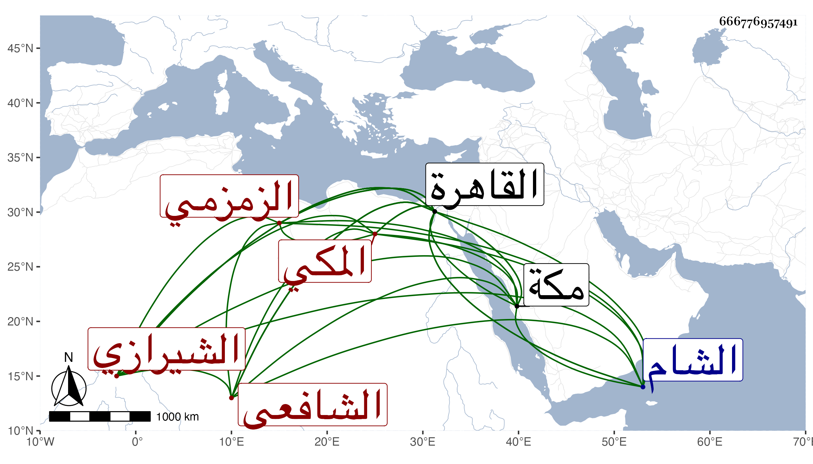

0902Sakhawi.DawLamic.ITO20230111-ara1.EIS1600.666776957491
Biography ID: 666776957491
94
محمد بن عبد العزيز بن عبد السلام بن موسى بن أبي بكر الجمال بن العز الشيرازي الأصل المكي الزمزمي الشافعي نزيل القاهرة والماضي أبوه والآتي عمه موسى . ولد في شعبان سنة ست أو سبع وأربعين وثمانمائة بمكة ونشأ بها فاشتغل يسيرا بعد أن حفظ القرآن وصلى به هو وأخوه أبو بكر الآتي التراويح بالمسجد الحرام ليلة بليلة ، وحفظ المنهاج وغيره وأخذ بها في الفلك عن نور الدين الزمزمي وقدم القاهرة في سنة خمس وستين فأقام بها مدة واشتغل بالفرائض والحساب والميقات والهندسة وغيرها حتى برع وتميز في بعضها وحضر في الفقه عند المناوي وغيره وتردد للشمني وأئمة الوقت وكتب عني عدة أمالي بل سمع على غير ذلك ومدحني بما كتبه الجماعة عنه بحضرتي ، وطلب الحديث يسيرا ودار على شيوخ الرواية ورغب في ذلك وارتحل إلى الشام وأخذ بها عن الخيضري وغيره وولع بالنظم وانتفع بالشهاب الحجازي فيه ، وكان ذكيا ظريفا عشيرا ذا نغمة حسنة وطلاقة . مات بالقاهرة غريبا مطعونا في ليلة الثلاثاء سلخ شعبان سنة ثلاث وسبعين ودفن من الغد في مشهد صالح رحم الله شبابه وعوضه خيرا . ومن عنوان نظمه :
| كن راحما للخلق كي تسلما | فحق للراحم أن يرحما |
| إرحم عبيد الله في أرضه | ترحم من الرحمن رب السما |
